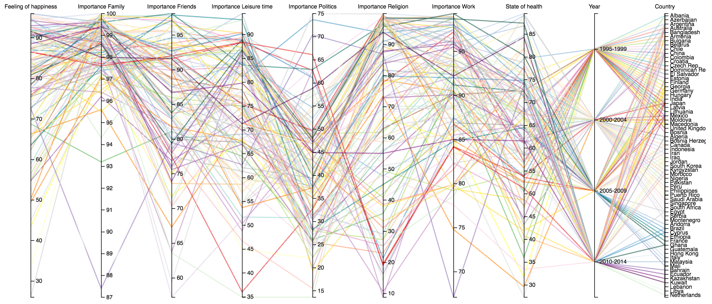
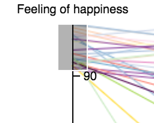
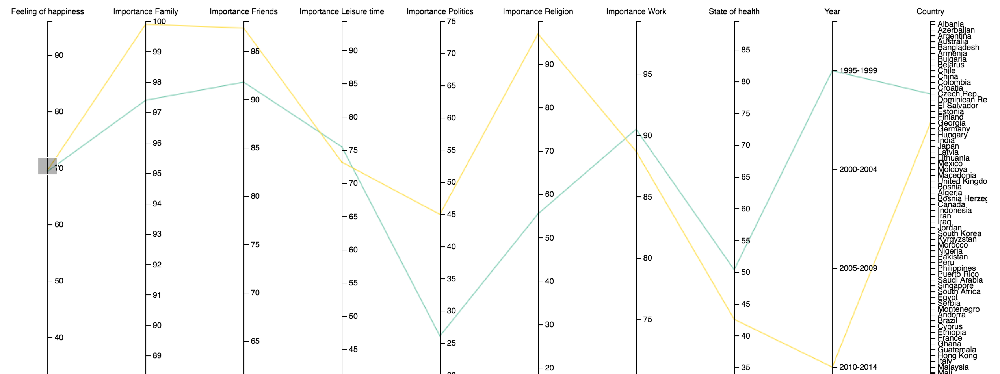
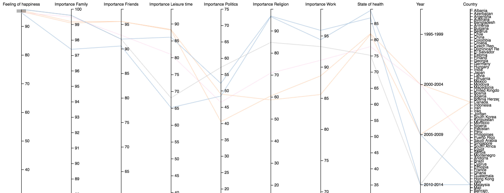
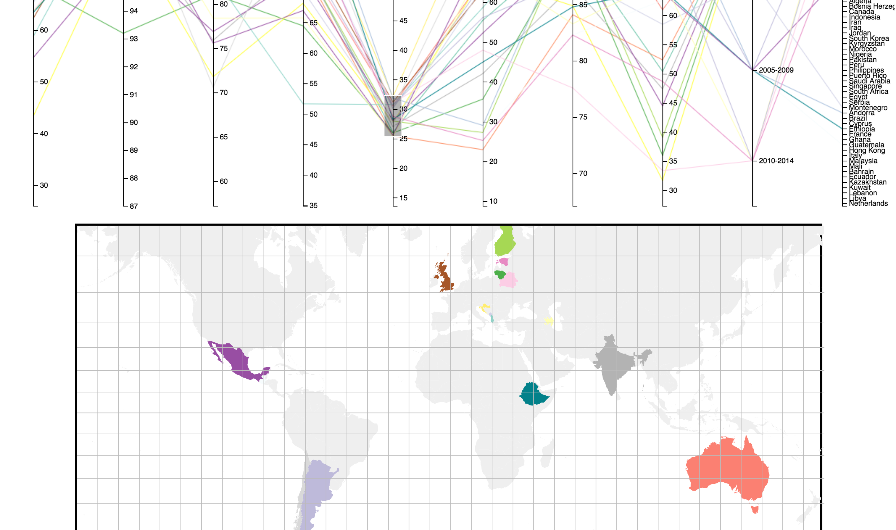
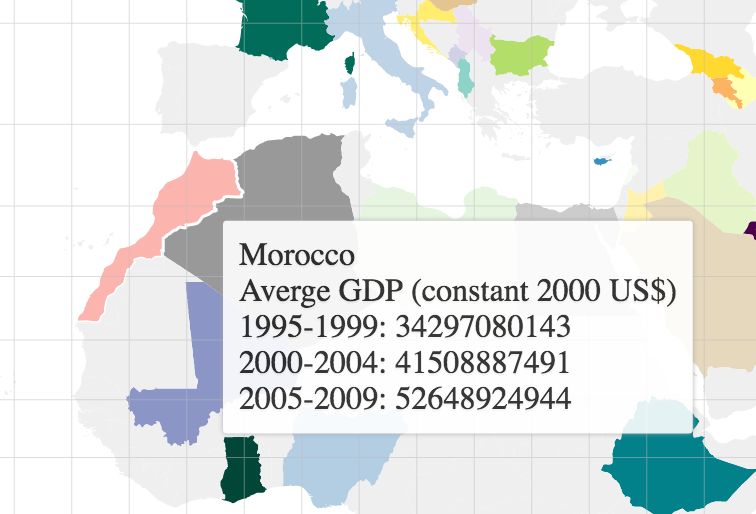
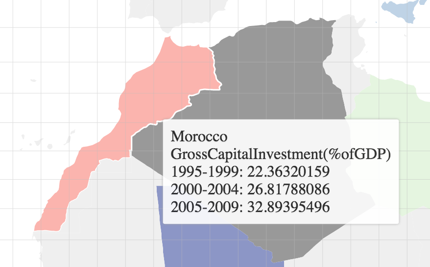
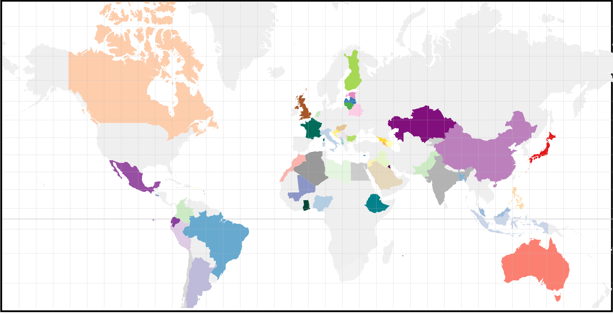
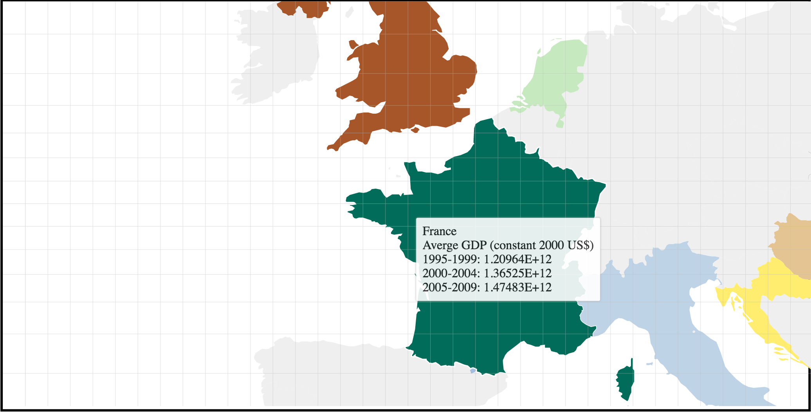

Based on: https://bl.ocks.org/mbostock/4180634 and http://bl.ocks.org/syntagmatic/2411910
- Click-hold and drag on the axis to brush-select a data range
- Hover on a country to display economy data
- Click a country to switch economy data
- Scroll or double-click on the map to zoom on a region
- Click-hold and drag on map to change the map overview
All values in parallel coordinates are summed percentages from i.e "very happy" and "rather happy" responses from the survey. The economical data is fetched fom gapminder and averaged together to fit the time periods given from the WVS.
My questions of research are where do people consider themselves to be the happiest? When was this happening. What is the reason behind it? Are there other fundamental values that influence the feeling of happiness? How are macro economical qualities affecting these values? Is there any connection between economic stability and feeling of happiness?
Without any filtering, the parallel coordinates give a good overview of how most countries value the given factors. Family is almost always valued high, a bump for friends, a rise for leisure time and finally a significant drop in politics.
By brushing the "feeling of happiness" variable on the parallel coordinates diagram I can see links between each of the qualitative values as well as the time period.
 With the overall range of "importance politics" being quite low, a pattern with the countries with highest feeling of happiness can be linked to low values of important politics too
By brushing and comparing these axes I can get a feeling of what each individual country value in terms of important fundamental values in society.
While brushing the parallel coordinate axes, the corresponding countries are displayed on the world map in the same color and non-selected ones filtered out.
Hovering on each country a tooltip is displayed with economy statistics.
By clicking on the country I can toggle between 7 different macro economical statistics.
Zooming(MouseScroll or double-click) and dragging the world map is available to make sure the best overview is possible for analysis.
 By using the tools to compare Malaysia(highest happiness reported) and Egypt (lowest) we can see that for example their total GDP is very much the same but income per person is almost 4 times higher. With almost similar tax returns too, this could be seen as higher income and more money to the households would generate higher feeling of happiness. However, Egypt was also close to an area pre-arab spring which should be taken into account.
To answer my research questions fully more analysis and questioning should be regarded. It's a difficult topic but I think my tool can provide some overall insights of societal values and macro economic factors. I certainly learned a lot thinking and working with analytic trails in this way and together with D3 it was really fun once I got the hang of it. The task seemed a bit overwhelming at first when starting to research the data but once I got my hands dirty with excel and text-manipulation it wasn't so bad.